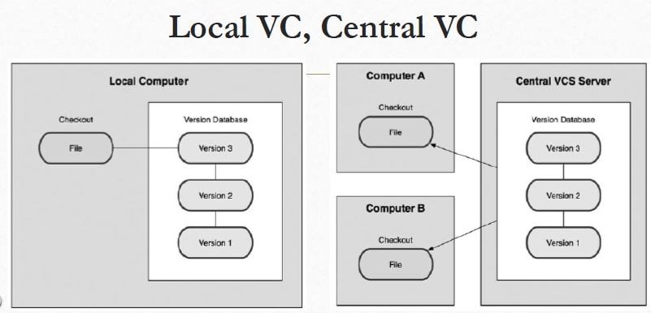

خانه/آموزش گیت/مقدمات
آموزش گیت
مقدمات
سمیه نیک خو - 1400-08-04 آخرین به روزرسانی: 1400-08-04
فواید کنترل ورژن سیستم:
-
برگرداندن فایل ها به حالت قبلی
-
برگرداندن کل پروژه به حالت قبلی
-
مقایسه کردن تغییرات در طول زمان
-
مشاهده کردن فردی که آخرین تغییر را ایجاد کرده که احتمالا باعث بروز خطا شده است
مقایسه کنترل ورژن محلی با کنترل ورژن مرکزی:
نمونه ی کنترل ورژن محلی:
rcs:
- یک کنترل ورژن محلی محبوب است. که اساسا با نگه داشتن پچ ست ها (تفاوت های بین فایل ها) کار می کند.
- بعدا می تواند هر فایلی را به وسیله ی افزودن همه ی پچ ها به آن بازسازی کند.